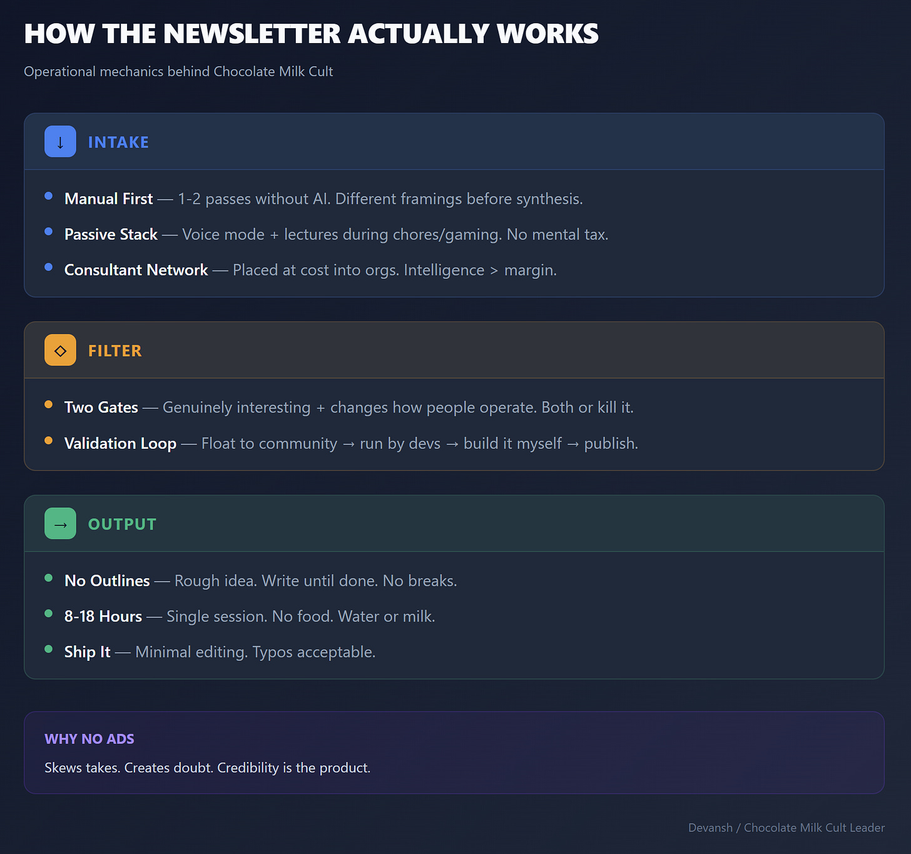
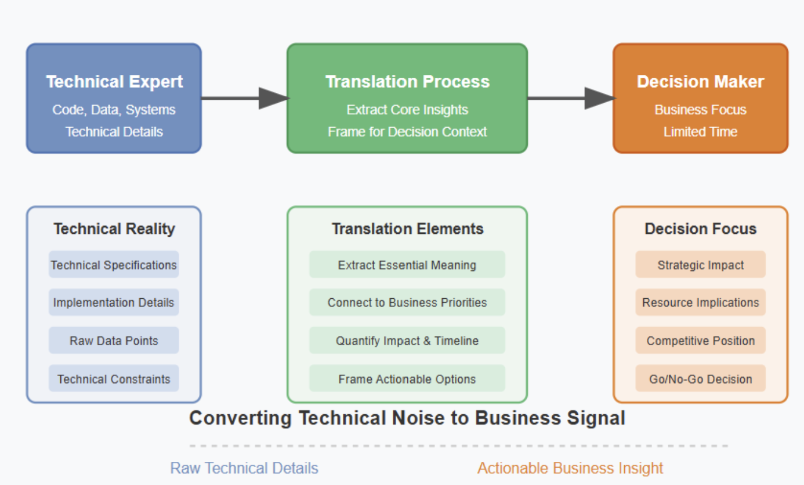
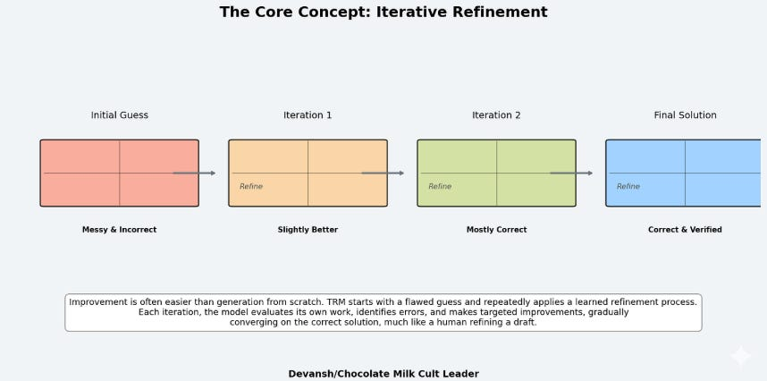
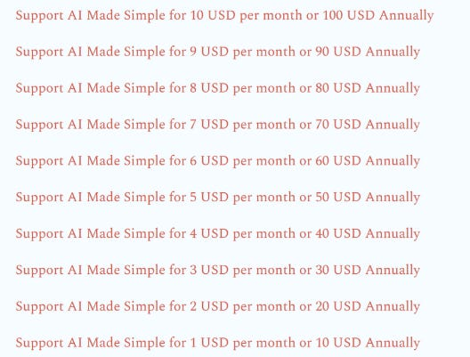
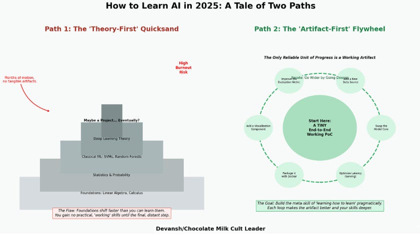
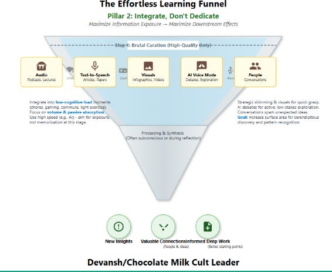

300K Subs Special: How I Write AI Made Simple.
📝 3 annotations300K Subs Special: How I Write AI Made Simple.
How I created one of the world's largest open source AI Research Communities
We recently crossed 300K subscribers across my writing platforms (240K on Substack; ~70K on Medium across the followers and mail lists). I did this with no ads, no institutional backing, and without ever going "viral" or having to rely on fishing trends/engagement bait style content.
In this article, I'll give you an inside look at how I write this newsletter, end to end.

Executive Highlights — TL;DR of the article
How I Started Writing
I never planned to become a writer. The newsletter started as a credentialing hack.
In 2017, I was part of a three-person team that beat Apple in Parkinson's disease detection on real time voice calls in low resource environments. The algorithm was patented and later even commercially licensed by a good tech company for their use. This should have opened doors to other entry-level AI positions. It didn't—I had no degree, so I was getting auto-screened before a human ever saw my application.
So I made a plan: get a PhD directly. Skip the Master's (couldn't afford it), convince someone to bet on me.
Also around this time (June 2020), I landed a state government project modeling healthcare policy for 300 million people—decisions that would affect infant mortality, maternal health, and resource allocation for decades. I was terrified of being the first person to commit mass murder via bad Machine Learning Models, so I started reading research obsessively. Five papers a day, sometimes more.
My supervisor for the project came in with the best advice I've ever gotten: "You're doing amazing work reading papers, but when this engagement ends, nobody will know how much you did. Start documenting what you read somewhere. It will help with your PhD apps."
Phase 1: Writing Research Breakdowns (late 2020—mid 2023)
Plan was simple. Break down papers publicly, build a repository of my thinking, show PhD programs I could do the work. No expectations of becoming famous or having any audience.
However, things started taking a different turn. My writing started to hit a dedicated base of readers pretty soon. And this base was very different from what I expected: my work regularly reached senior investors, researchers, some founders, and managers.
I got lucky with a few factors in my favor:
- I thought about AI economically (years of building under resource constraints will do that).
- I wrote simply—no PhD jargon. Saved everyone time.
- By and large, AI commentary was split in 2 types: sources that summarized news and very jargony articles written for other researchers. No one was really looking at cutting-edge AI and trying to explain the "so what" to people. I had literally no competition.

My refined communication framework after talking to this cohort
Seeing my growth, I launched AI Made Simple in January 2023 w/ a list of 10K subs. By graduation in May, my roster was up to 30K with some very sexy names. The PhD plan died. I was building something better—and I didn't mind.
Phase 2: Going Deeper (Mid-Late 2023 to Now)
Due to injuries, I had to stop fighting. That's when I started writing more and on more difficult topics. Writing was my crutch, my way of getting my mind to shut up.
The truth isn't so much that I like writing; after fighting, this is the only other thing that comes close to shutting out my brain.
Stupid thing I did recently—climbed a big bridge in crocs + w/ a bad back
This was also where I shifted my writing with a stronger investor focus. I started reading more financial analysis in AI, which exposed me to very new mental models, analysis patterns, etc.
That's where the newsletter sits now: analysis of cutting-edge research that will reshape AI and capital markets, written by someone who actively builds AI products and validates their predictions on the ground.

This is an idea we called out months ago — the same Inception Labs that just raised a 50M Seed round
The Chocolate Milk Cult Writing Philosophy
At my core, I'm motivated by being the best at something. Expressing my Will to Power. When all is said and done, I will be the best AI analyst of all time—far enough ahead that there's no clear second place.
How I try to get there: bridging gaps. Research, engineering, finance—these worlds don't talk to each other well. Most people are excellent in their silo. I want to be the person threading them together, translating insights across boundaries.
That shapes what I write about. Every piece has to pass two filters:
- I have to find it genuinely interesting. If I'm not curious about it (or don't have anything meaningful to say), I won't write about it—even if it's trending, even if it would get clicks.
- It has to matter. People need to know this, and knowing it will change how they operate.
This comes from a core belief: tech works best when it's democratized. The more people who genuinely understand what's happening, the more people can build on it, and the better the outcomes for everyone.

We have plans for every budget here
Why no ads or sponsorships
I get asked this a lot. Three reasons.
- It would skew my takes. Once you start taking sponsorship money, big names come knocking. And once they're paying you, there are things you can't say anymore—even if you don't explicitly agree to that.
- I'm selling information and insights. If I also run ads, every piece I write gets a shadow of doubt. Warren Buffett's 10USD/month subscription to this newsletter is worth much more than 100K from some AI startup trying to buy street cred.
- Ads are ugly. There are way too many of them on the internet already.
Operational Mechanics
Information Intake
I spend a lot of time reading. Research papers, market reports, thought pieces. One rule I don't break: the first 1–2 passes are always manual. No AI summaries. I want to be exposed to different writing styles, ideas, and framings before I store anything for later analysis.

Information intake — sources and methods
For passive learning, I run voice mode or lectures while doing chores, playing video games, whatever. Just talking to AI about ideas or letting lectures play in the background.
I mentioned the consultant army earlier—I place technical consultants into organizations at cost. The goal isn't to profit on the consulting; it's to gather ground-level data on what's actually happening across the industry.
Choosing Topics & Validation
Based on what I'm reading and hearing, I'll form a few theses or experiment ideas. Then I test them:
- Float to my open source community, gather feedback
- Run by my developers, see what resonates or gets pushback
- Build things myself to validate on the ground
The newsletter becomes mass distribution for these refined ideas. Once something's out, I get to test my thinking against thousands of readers.
The Actual Writing
I don't work from detailed outlines. Usually just a rough idea of what I want to cover and why it matters. Then I sit down and write until it's done. No breaks, no pauses.
Typical session: Most articles take around 8–10 hours. The longest one ever was 18 hours non-stop. During those stretches, I don't eat—just water or milk—because I find food very distracting. Hammer it out to completion.
I don't do much editing after. By the end I'm tired, and I'm confident that everything I write elite so a few minor typos or dangling thoughts are an acceptable tradeoff.

How to Stay Sharp on AI Without Burning Out
Where This Goes Next
The independent media landscape is shifting fast. Traditional outlets are hollowing out. AI is flooding the zone with content that's technically competent but soulless.
- Credentialing has inverted. It used to be: get credentials → get platform → build audience. Now it's: build audience → that becomes the credential.
- Most AI coverage is structurally broken. The people who understand AI deeply are building, not writing. The people writing full-time often don't understand deeply enough.
- Attention is the wrong metric. Everyone optimizes for it, but you want the right attention. 1,000 readers who make decisions are worth more than 100,000 who scroll past.
And that's still the plan.
Thanks for reading. If you've been here since the early days, I appreciate you. If you're new, welcome—there's a lot more coming.